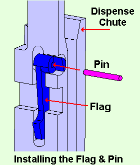

- Sample pick-and-place device error
- RV supply carriage device error
- Bulk feeder device error
|
- Check the dispense chute area for a stuck chute status sensor.
Note: This sensor flag can stick in multiple positions, in or out of the chute.
- If the sensor flag is stuck in a position out of the chute (flag in sensor) without a vessel causing it to do so, then the bulk feeder stops delivery of vessels because software is sent a signal that the chute is full.
- If the sensor flag is stuck in a position in the chute (flag not in the sensor), then the bulk feeder continues to supply vessels because the software is sent a signal that the chute is empty. This condition can cause a jam above the sensor flag.
- Look for jammed vessels in the dispense chute area near the top of bulk feeder.
- Look for upside down vessels using a flashlight in the dispense chute area and note how many vessels are in the chute. Determine if the vessel level actuates the chute status sensor flag.
- Check for inverted vessels in the supply carriage.
- Check for vessels in the sample pick-and-place.
- Inspect for vessels laying on their sides in the sample wheel (resulting from delivery of inverted vessels to the sample wheel).
- Verify that the vessel hanging from the dispenser is loose, can be pushed upward (approximately ¼ in), and that it drops back down freely.
|
Other motor slippage errors
Note: Motor slippage detected by the index sensor often indicates jams in this module.

|
- If vessels are jammed at the top of the elevator and the dispense chute is overflowing with vessels, then:
- If vessels are getting jammed in the hopper, then:
- Remove all vessels from the hopper.
- Inspect the hopper edges near the bottom, inside for sharp or rough surfaces or edges. Correct by performing Mod 6216.
- To determine if come other source is causing the slippage or stall, check for:
- Loose coupler on the motor drive.
- Damaged or unplugged motor wires at the connector of the BF Interface PCB.
- Unseated Motor cable from the MCC backplane to the Interface PCB or connector pins that are pushed out of the connector.
- Unseated motor index sensor and wires at the Interface PCB connector.
- Damaged or unplugged ribbon cable to the MCC backplane.
- Misaligned elevator chain (scoops are rubbing the sides).
|
Orienters
Note:
- Jam issues in the orienter area can have several causes.
- Failures of the upper or lower pushers are reported as RV ejector jams.
- The instrument uses sensors mounted on air cylinders to monitor and verify that the pushers extend and retract within the ejector transit time (450 msec).
- The sensors are adjusted to be active when the pushers are fully retracted.
- Earlier instruments contain only a single retracted state sensor.
|
- Verify correct alignment of the upper and lower pushers to the scoops.
- Verify that the secondary air pressure is set to 20 psi and is present at the valves, then check for leaks.
- Verify that the piston-retracted sensor is adjusted correctly. The LED on it should light only when the push rod is fully retracted.
Note: Early instruments do not have a piston-extended sensor.
- Check the wire connections at the Interface PCB. The wires can be damaged while removing vessels from the baseplate in front of the hopper.
Note: The PCB on newer instruments has been redesigned to reduce the possibility of damaged connectors.
- Confirm that the ribbon cable from the MCC backplane to the Interface PCB is not damaged or unplugged.
- Confirm that the upper and lower air pistons are not bent.
Caution: Replace the cylinder if the piston is bent or damaged. Do not attempt to straighten the piston rod.
|
| Dispenser
Note: The instrument monitors and verifies that the escapement push rod extends and retracts within the allowed transit time (500 msec).

|
- Verify that the secondary air pressure is:
- Set to 20 psi
- Present at the valves
- Not leaking
- Verify that the cylinder piston-retracted sensor is functioning correctly. The sensor LED should only be lit when the piston is fully retracted. Adjust if necessary.
Note: If the bulk feeder has a piston-extended sensor, then also verify that this sensor is functioning correctly.
- Check the wire connections at the Interface PCB. The wires can be damaged while removing vessels from the baseplate in front of the hopper.
- Confirm that the ribbon cable from the MCC backplane to the Interface PCB is not damaged or unplugged.
- Inspect the piston rod and confirm that it is not bent or otherwise damaged. Replace if necessary.
- Inspect for correct clearance between the dispenser end area and the supply carriage.
- Confirm that the dispenser block is installed correctly and that vessels are only dispensed on the piston-extended stroke of the air cylinder. If a vessel is dispensed on the piston-retracted stroke, the block is inverted.
|